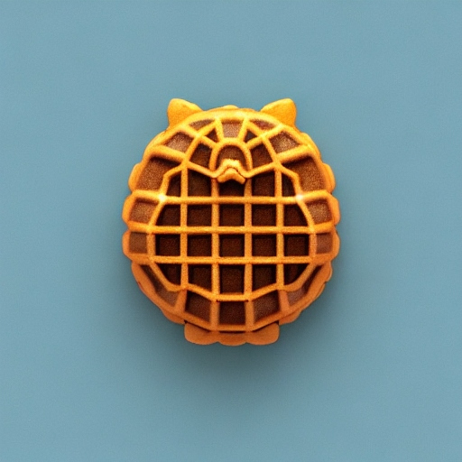

Go Back~
Galactic Taiyaki

Description
A treat as dynamic and unpredictable as the show's protagonist, Space Dandy. These taiyaki are stuffed with various fillings, reflecting the show's eclectic blend of humor, style, and intergalactic exploration, all wrapped up in a delicious fish-shaped pastry.
Ingredients
For the taiyaki batter:
- 1 cup all-purpose flour
- 2 tbsp sugar
- 1/2 tsp baking powder
- Pinch of salt
- 1 egg
- 3/4 cup milk
- 1 tbsp melted butter
For the filling:
- Sweet red bean paste (anko)
- Nutella or chocolate spread
- Assorted fruit (strawberries, bananas, etc.)
Instructions:
- In a bowl, whisk together the flour, sugar, baking powder, and salt.
- In a separate bowl, beat the egg, then add milk and melted butter. Mix well.
- Combine the wet and dry ingredients, stirring until just combined. Let the batter rest for about 10 minutes.
- Preheat a taiyaki or fish-shaped waffle iron and lightly grease it.
- Pour a small amount of batter into each fish-shaped mold, filling it about halfway.
- Add a spoonful of sweet red bean paste, Nutella, or chocolate spread to one side of the batter in each mold.
- Add slices of fruit on top of the filling.
- Cover the filling with more batter, making sure not to overfill.
- Close the waffle iron and cook until the taiyaki is golden brown and crisp on both sides.
- Carefully remove the Galactic Taiyaki from the waffle iron and let them cool slightly before enjoying your cosmic treat, just like the adventurous Space Dandy himself!